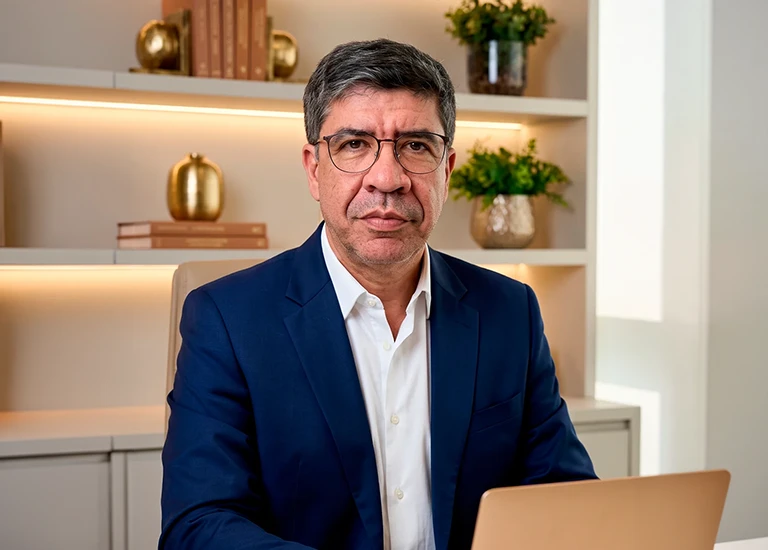
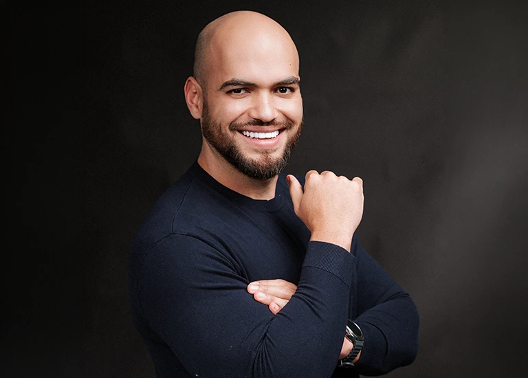
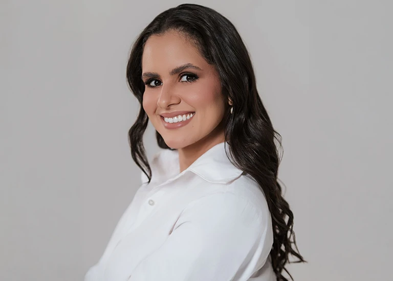
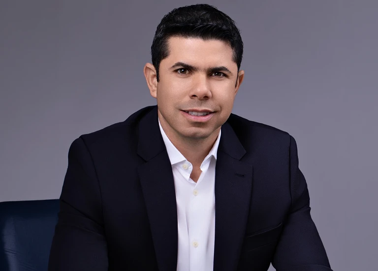

Para algumas clínicas, a maior oportunidade está em atrair mais pacientes.
EVENTO PRESENCIAL · 100 VAGAS · ALPHAVILLE-SP · NOVEMBRO
EscalaMEDA Rota do Crescimento
Um caminho prático para dobrar o faturamento da sua clínica, melhorar a lucratividade e construir o próximo nível do seu negócio.
0vagas
0presencial
NovembroAlphaville — SP
A GRANDE IDEIA
O que precisaria mudar na sua clínica para ela dobrar de faturamento?
Mais pacientes?
Mais investimento em marketing?
Uma equipe maior?
Mais procedimentos?
Talvez.
Mas talvez o próximo salto da sua clínica não esteja simplesmente em fazer mais.
Para outras, a demanda já existe — o que falta é converter melhor as oportunidades que chegam.
Em alguns casos, existe faturamento sendo deixado na mesa por decisões de oferta, precificação, ticket, recorrência ou retenção.
E existem clínicas que já alcançaram um bom faturamento, mas precisam de estrutura para suportar um novo ciclo de crescimento.
“Dobrar o faturamento não significa, necessariamente, dobrar pacientes, equipe ou investimento. Significa descobrir quais alavancas precisam ser acionadas para fazer a clínica crescer.”
Porque clínicas em momentos diferentes precisam de movimentos diferentes.
Dobrar o faturamento é o objetivo. O caminho depende do gargalo.
Essa é a tese central do EscalaMED — A Rota do Crescimento.
PARA QUEM ESTAMOS FALANDO
O público prioritário do EscalaMED é o médico empresário cuja clínica fatura aproximadamente entre R$ 40 mil e R$ 100 mil por mês.
R$ 40 milR$ 100 mil/mês
É o médico que já ultrapassou a fase inicial.
Já tem pacientes.
Já gera receita.
Já provou que existe demanda pelo seu trabalho.
Mas começa a perceber que continuar fazendo mais do mesmo pode não ser suficiente para romper o patamar atual.
O que precisa mudar no meu negócio para chegar ao próximo nível?
Para alguns, será necessário gerar mais demanda.
Para outros, converter melhor.
Alguns precisarão rever oferta, precificação e ticket.
Outros encontrarão oportunidades em recorrência e retenção.
E alguns já começarão a enfrentar gargalos relacionados a equipe, processos, indicadores e gestão.
A faixa de R$ 40 mil a R$ 100 mil é o centro do nosso público, não necessariamente um critério de exclusão.
OS 4 PILARES DA ROTA
Os 4 Pilares da Rota
01
Mentalidade Empresarial
Enxergar a clínica como negócio.
Números, oportunidades, prioridades e decisões. Antes de executar mais, entender onde está o verdadeiro potencial de crescimento e qual gargalo precisa ser enfrentado.
02
Atração
Gerar mais oportunidades de faturamento.
Reativação, indicação, posicionamento, ações locais, marketing médico e geração consistente de demanda.
03
Conversão
Transformar melhor oportunidades em faturamento.
Oferta, precificação, vendas, experiência do paciente, follow-up, ticket, retenção e recorrência.
04
Expansão
Criar estrutura para sustentar o próximo estágio.
Equipe, processos, liderança, indicadores, finanças, capacidade operacional e tecnologia.
Porque existe uma diferença entre alcançar um novo patamar de faturamento e construir uma empresa capaz de sustentá-lo.
O PAPEL DA INTELIGÊNCIA ARTIFICIAL
IA não será o centro da narrativa do EscalaMED. Ela será apresentada como aquilo que acreditamos que deve representar dentro de uma clínica:
um braço catalisador da execução.
Tecnologia para apoiar análises, organizar informações, simplificar processos e aumentar a capacidade de execução da clínica.
A estratégia continua sendo empresarial.A inteligência artificial entra para potencializá-la.
A EXPERIÊNCIA ESCALAMED
A Experiência EscalaMED
100 participantes
Presencial
Alphaville — SP
Novembro
O EscalaMED não será apenas uma sequência de palestras. O participante percorrerá os quatro pilares olhando para a realidade da própria clínica e começará a construir sua própria Rota do Crescimento.
Durante a experiência, terá acesso a:
01
Mapa da Rota — esboço do Plano de Ação da clínica
02
Planilha da Hora da Cadeira
03
Agente de IA para apoio à precificação por markup
04
Conteúdo prático nos quatro pilares
05
Kit EscalaMED
06
Coffee break
07
Momentos de conexão entre os participantes
Você não vai apenas conhecer A Rota do Crescimento. Vai começar a construir a sua.
NOSSO DIFERENCIAL
Não ensinamos gestão olhando uma clínica de fora.
Ensinamos a partir dos negócios que construímos — inclusive dos desafios que ainda estamos resolvendo.
Uma das clínicas construídas pelos sócios da X5 MED, em Manaus, saiu do zero e alcançou o patamar de aproximadamente R$ 1 milhão de faturamento mensal em cerca de um ano.
Naquele momento, Fábio e Patrícia estavam diretamente envolvidos na operação e nas vendas.
O crescimento aconteceu. Mas revelou um novo gargalo.
Quando os dois deixaram a linha de frente da operação, o faturamento recuou para a faixa de aproximadamente R$ 400 mil mensais.
O que leva uma clínica a um patamar não necessariamente é o que a sustenta nesse patamar.
Hoje, o desafio é buscar novamente o patamar de R$ 1 milhão por mês, mas com uma construção diferente:
Sem depender da presença diária de Fábio e Patrícia na operação.
Esse é o desafio atual — e não um resultado que afirmamos já ter alcançado. É justamente essa realidade que fortalece aquilo que ensinamos.
Não ensinamos a partir de uma empresa perfeita.
Ensinamos a partir de empresas reais.
Empresas que crescem.Que encontram gargalos.Que precisam rever decisões.Que testam estratégias.Que estruturam pessoas e processos.E que continuam buscando o próximo nível.
Porque crescer uma vez é um desafio. Construir uma empresa capaz de sustentar o crescimento é outro.
QUEM ESTÁ POR TRÁS DESSA ROTA
Quem Está Por Trás Dessa Rota

Fábio Rodrigues
Médico cirurgião, empresário e gestão.
Participou diretamente da construção e do crescimento das clínicas e hoje atua sobre o desafio de transformar crescimento em estrutura empresarial.
Patrícia Santiago
Experiência do cliente e vendas.
Esteve diretamente na linha de frente comercial durante a construção do case de Manaus e traz a visão de experiência, jornada, percepção de valor e conversão.

Vital Araújo
Vendas e Mentalidade Empresarial.
Além da atuação na X5 MED, vive atualmente, ao lado de Tainara, o processo de estruturação de uma nova clínica em Sergipe.

Tainara
Médica dermatologista, empresária e posicionamento.
Traz a visão de autoridade, diferenciação e percepção de valor enquanto participa da construção da nova operação em Sergipe.

Patrício Darvisson
Empresário e visão empresarial sem o viés da medicina.
Com participação em mais de 30 negócios, atuando, de acordo com cada empresa, como fundador, sócio, investidor ou gestor. Sua presença traz um contraponto importante: “Se isso fosse qualquer outra empresa, administraríamos o negócio dessa mesma maneira?”
MODELO DO EVENTO
EscalaMED · Alphaville — São Paulo
100 vagas presenciais
Participação sem custo- Confirmação
- Inscrição + confirmação pela equipe X5 MED
- Local
- Alphaville — São Paulo
- Mês
- Novembro
- Data
- 27, 28 e 29
O EscalaMED não será um evento sobre marketing. Não será um evento sobre inteligência artificial. E não será apenas um evento sobre gestão. Será um evento sobre crescimento.
Como dobrar o faturamento.Como transformar faturamento em lucratividade.E como construir uma clínica preparada para o próximo nível.
01Mentalidade Empresarial
02Atração
03Conversão
04Expansão
ESCALAMED · A ROTA DO CRESCIMENTO
EscalaMED A Rota do Crescimento
Um caminho prático para dobrar o faturamento da sua clínica, melhorar a lucratividade e construir o próximo nível do seu negócio.
Recebemos seu interesse — nossa equipe entrará em contato para confirmar sua vaga.